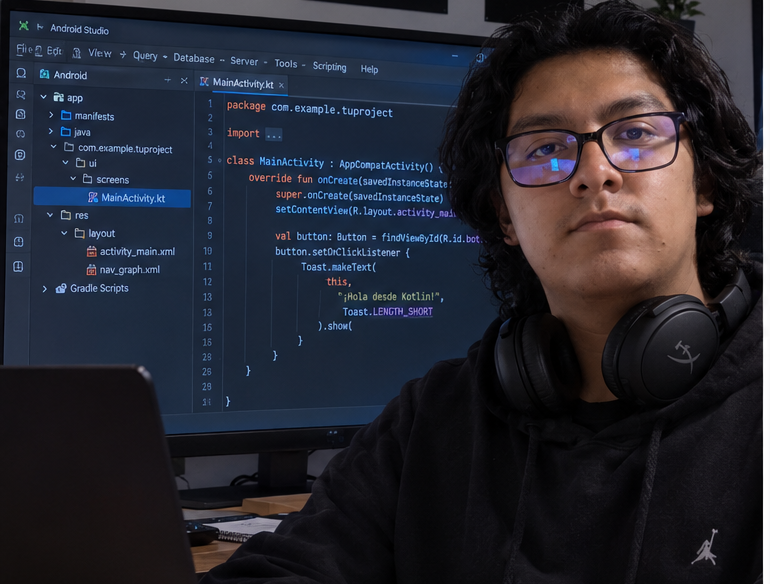
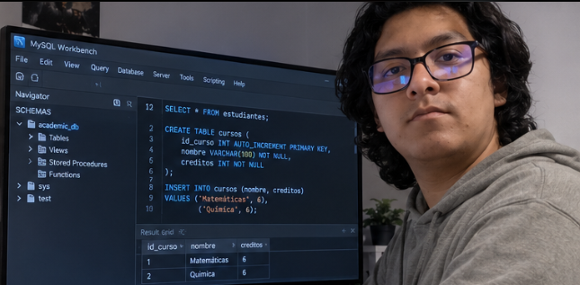
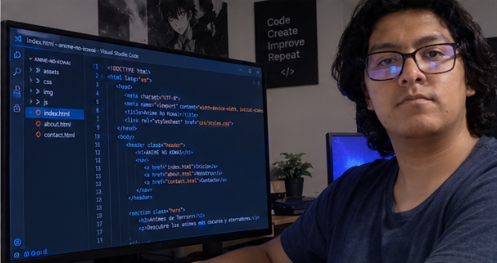

Hola, soy Ricardo
Estudiante de universidad con pasión por el desarrollo de software. Me gusta aprender nuevas tecnologías y enfrentar retos de programación.
Estudiante de universidad con pasión por el desarrollo de software. Me gusta aprender nuevas tecnologías y enfrentar retos de programación.
Un pequeño clip de mis partidas favoritas.
La canción que escucho mientras programo.

Desarrollo de interfaz móvil usando Kotlin.

Diseño de base de datos relacional y queries en MySQL.

Estructura semántica utilizando HTML5, CSS y Bootstrap.